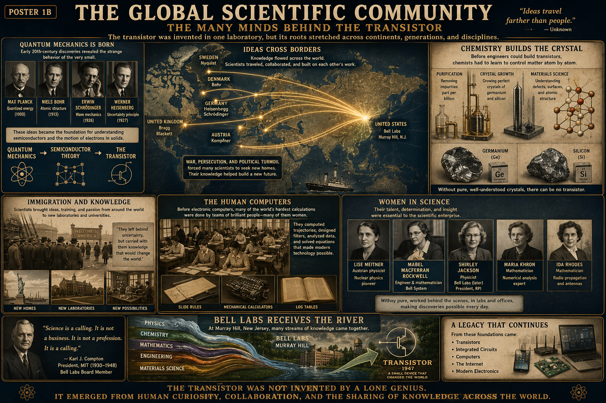

Quantized energy
Planck's work introduced the idea that energy could come in discrete amounts rather than changing only as a smooth continuum.
Poster 11 · The Many Minds Behind the Transistor
A lesson for Klins on the worldwide human network behind the transistor. The device appeared at Bell Labs, but its roots stretched across countries, generations, universities, laboratories, wars, migrations, disciplines, and thousands of people whose names rarely appear in the simplified story.

Before anyone could design a transistor, scientists had to understand matter at a much smaller scale.
Planck's work introduced the idea that energy could come in discrete amounts rather than changing only as a smooth continuum.
Bohr developed an early atomic model that helped connect electron arrangement with the behavior of matter.
Schrödinger's work helped describe electrons as quantum states distributed through space rather than tiny planets on fixed tracks.
Heisenberg helped establish the mathematical structure of quantum mechanics and the limits of classical intuition at atomic scales.
Semiconductor theory did not emerge directly from telephone engineering. It depended on decades of abstract physics that initially seemed far removed from practical electronics.
Knowledge moved through letters, journals, conferences, universities, laboratories, and migration.
Researchers in Germany, Denmark, Sweden, Austria, and the United Kingdom contributed major pieces of quantum mechanics, solid-state theory, crystal structure, and electron behavior.
American universities and laboratories received scientists, ideas, and methods from many parts of the world.
Murray Hill did not create all the knowledge itself. It became the place where many streams of knowledge could finally meet around one difficult problem.
The scientific map was shaped not only by curiosity, but also by human displacement.
Political persecution and war drove many researchers from their homes, especially in Europe during the 1930s and 1940s.
A scientist may leave a country, but carries training, techniques, questions, and intellectual networks into the next institution.
Universities and laboratories receiving displaced scholars gained knowledge that later contributed to physics, electronics, radar, computing, and materials science.
Physics explained what a semiconductor could do; chemistry made suitable material possible.
Semiconductor behavior can be altered by tiny contamination levels. Purification had to reach extraordinary precision.
Germanium and silicon had to be grown into controlled crystal lattices with very few defects.
Researchers needed to understand polishing, oxidation, junction formation, and how defects changed current flow.
The transistor is a perfect example of theory depending on material reality. The equations could be correct, but the device would still fail if the crystal was impure, damaged, or badly prepared.
People carried scientific traditions into new laboratories and universities.
Immigrants and refugees rebuilt their lives while continuing scientific work in unfamiliar countries.
Their knowledge strengthened research centers, teaching programs, and industrial laboratories.
Cross-border movement created combinations of expertise that might never have formed otherwise.
Before digital computers, teams of people performed the calculations that made modern technology possible.
Human computers calculated tables, trajectories, signal behavior, and engineering results by hand and with mechanical aids.
These tools compressed multiplication, division, powers, and logarithmic calculations into manageable workflows.
Mechanical machines accelerated arithmetic but still depended on trained operators and organized procedures.
The poster restores attention to people whose work was often essential but under-credited.
Her work helped transform understanding of atomic structure and nuclear processes.
Representative of the many women whose technical work supported communications and scientific systems.
Her later career illustrates how Bell Labs continued to benefit from broadening participation in advanced science.
Mathematical labor and numerical methods formed part of the invisible infrastructure of modern engineering.
Her work represents the transition from hand computation toward programmable digital systems.
The history of science becomes distorted when it is reduced to a few famous men. Laboratories also depended on mathematicians, technicians, human computers, chemists, assistants, machinists, and organizers.
The poster's river metaphor is one of its strongest ideas.
Physics, chemistry, mathematics, engineering, and materials science each carried different forms of knowledge toward the same problem.
At Murray Hill, those streams entered a laboratory culture capable of combining them into a practical solid-state amplifier.
Your projects are small, but they inherit a vast international history.
Every NPN transistor on your breadboard depends on quantum ideas developed long before the device existed.
Its processor, memory, board fabrication, software, standards, and supply chain come from worldwide collaboration.
Materials science, RF engineering, computer architecture, chemistry, fabrication, and software all meet inside one small module.
Chemistry lessons, electronics lessons, history lessons, bench notes, and software experiments become stronger when linked together.
Using a meter, recording results, and comparing evidence places your work inside the same culture of tested knowledge.
Even when working alone at the bench, you are using ideas, tools, and conventions created by communities across generations.
From these foundations came the systems now surrounding us.
The direct technological descendants of semiconductor physics and materials control.
Digital systems scaled because transistor technology could scale.
Phones, routers, laptops, sensors, microcontrollers, and embedded systems all carry this lineage.
The global story is easier to remember as a chain.
Planck, Bohr, Schrödinger, Heisenberg, and others reshape the understanding of matter.
Researchers connect quantum ideas to the electrical behavior of solids.
Scientists carry ideas into new universities, laboratories, and industrial research centers.
Pure germanium, silicon, crystal growth, doping, and better measurement become available.
The first working transistor appears from a global inheritance of theory, materials, labor, and experiment.
The transistor was not the product of one mind standing alone. It was the visible result of a hidden network: teachers, refugees, chemists, mathematicians, human computers, physicists, technicians, engineers, and institutions sharing knowledge across time and borders.